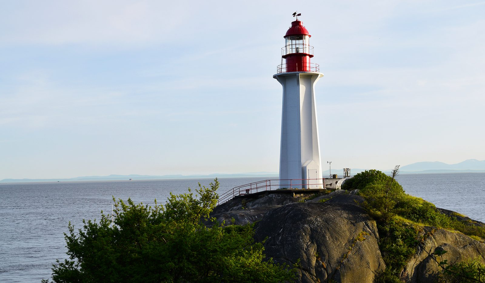
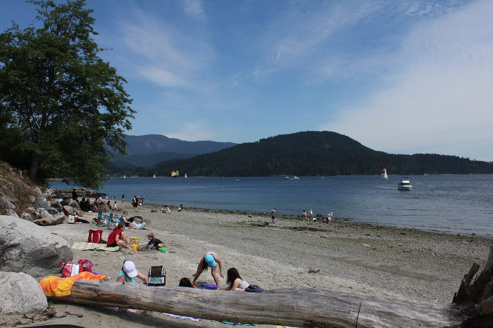

The land · long before the lots
Older names than the lots.
Every park here is on Sḵwx̱wú7mesh (Squamish), səl̓ilw̓ətaʔɬ (Tsleil-Waututh) and xʷməθkʷəy̓əm (Musqueam) lands.

Seven places
- Sḵ’íwitsutLighthouse Park (Point Atkinson), West VancouverSḵwx̱wú7mesh name, said to mean “turn around a bend”, for the tides at the point. (West Vancouver Archives: Sḵ’íwitsut (Point Atkinson); SFU Summit: thesis on Sḵwx̱wú7mesh place names (2024))
- St’éḵw’t’eḵw’sWhytecliff, West VancouverSḵwx̱wú7mesh name, “cut up in chunks”, from a story of sea serpents. The archives transcribe it St’e´k_w’t’ek_w’s. (West Vancouver Archives: Whytecliff (St’éḵw’t’eḵw’s))
- Whey-ah-wichenCates Park, North Vancouversəl̓ilw̓ətaʔɬ (Tsleil-Waututh) name, “facing both directions” or “facing the wind”. A village site until about 1869. (SFU Bill Reid Centre: Whey-ah-wichen (Tsleil-Waututh place name))
- Sen̓áḵwVanier Park & Kits Point, VancouverSḵwx̱wú7mesh village. Families were removed by barge in 1913; the courts returned part of the land in 2003. (Squamish Nation: Sen̓áḵw; CBC News: The little-known history of Squamish Nation land in Vancouver)
- X̱wáy̓x̱wayLumberman’s Arch, Stanley ParkSḵwx̱wú7mesh village site in what is now Stanley Park. (Squamish Atlas: X̱wáy̓x̱way)
- Iy̓ál̓mexw / ʔəy̓alməxʷJericho, VancouverA seasonal village site. (Squamish Atlas: Seasonal villages)
- sθәqәlxenәm ts’exwts’áxwi7Rainbow Park, Smithe & Richards“Rainbow”. The first Vancouver park named by all three Nations (2022), for land once forest and marsh “where the sun and mist would form rainbows”. (Park Board report: Name for the new park at Smithe & Richards, June 6, 2022; Tsleil-Waututh Nation: Vancouver park named in hən̓q̓əmin̓əm̓ and Sḵwx̱wú7mesh language)

A note on names
Names and meanings are as given by the cited Nation, archive or university sources. Spellings vary between sources, and we use each source’s own spelling. For more on Musqueam history and language, see the MOA Musqueam teaching kit. Corrections from the Nations are welcome.
At Ambleside, West Vancouver’s pay parking does not apply where the Squamish Nation is the rightsholder (West Vancouver).